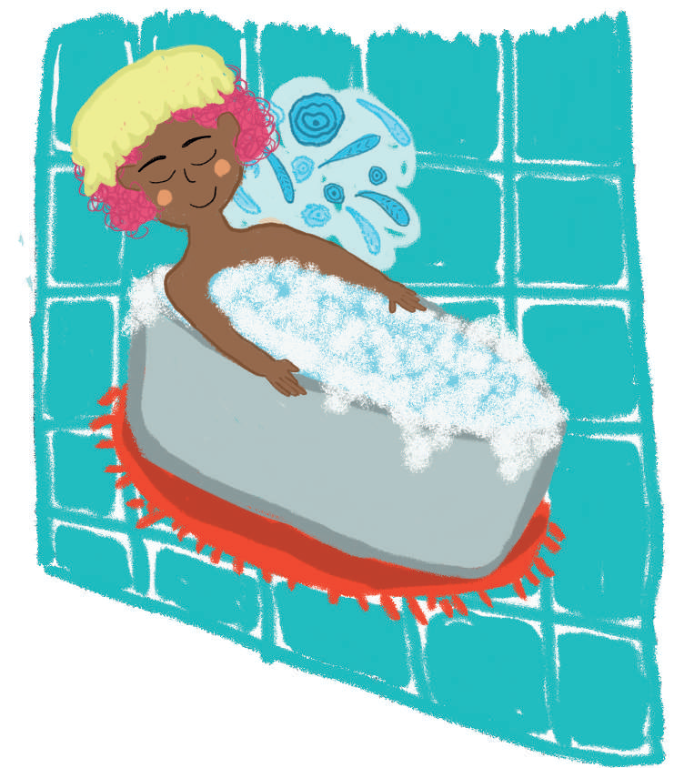

Cuidado de la higiene
Además de nutrir y fortalecer el cuerpo, se debe considerar la higiene como parte de los cuidados, es darle al cuerpo la atención y limpieza para que funcione sin riesgo de enfermedades.
Este posiblemente sea uno de los aspectos menos considerados durante el autocuidado, dado que muchas de las actividades que involucra, al ser de carácter cotidiano, no se les presta la suficiente atención.